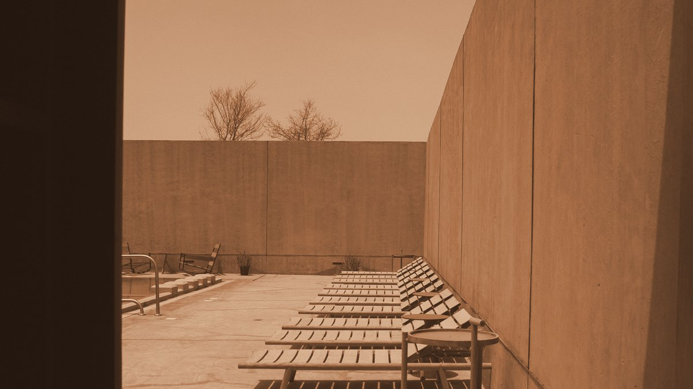
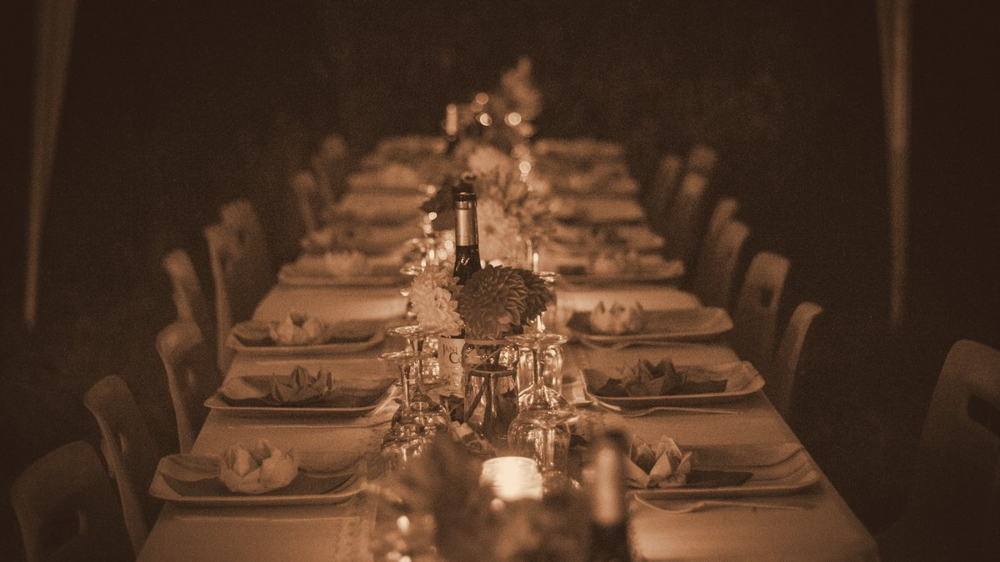
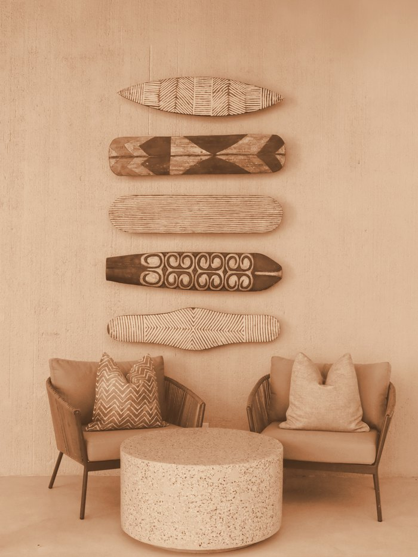
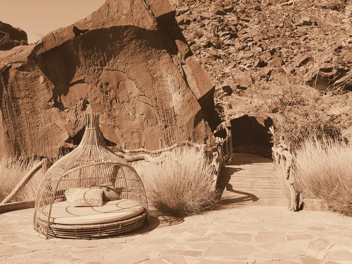
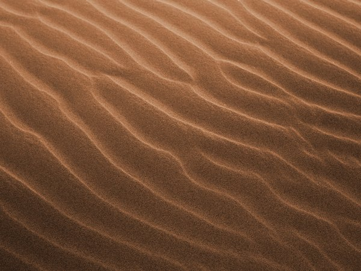

Scroll
Est. 2019 · Two hours from anywhere
Twelve rooms
One seating
Guided by
the light
The house

Nine metres of wall between you and the afternoon. The rooms hold their own temperature — no unit hums, nothing cycles at 3am. The building is the air conditioning.
The table

Everyone starts together and the kitchen cooks once. Seven courses, no substitutions, and the last one is served outside after the light has gone.

For the night
Twelve rooms, each facing a different hour of the day. Two-night minimum, dinner included, nothing else to decide.
Check datesFor the evening
Sixteen seats at one table, released the first Monday of each month. Arrive by six for the light.
Request a seat01 / 04


Seven courses at the single table. Wine pairing optional, corkage waived if you bring your own.
Ninety minutes with Adé, who has been reading this ground for thirty-one years. Six people maximum.
Forty minutes. We meet the 14:05 and nothing else, so plan around it.
One afternoon a week, four seats, cooking whatever came in. Ask at check-in — it goes quickly.